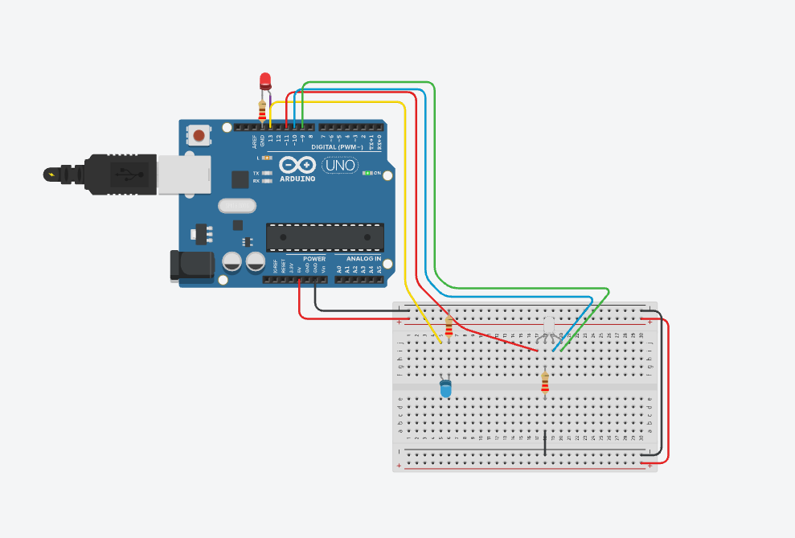
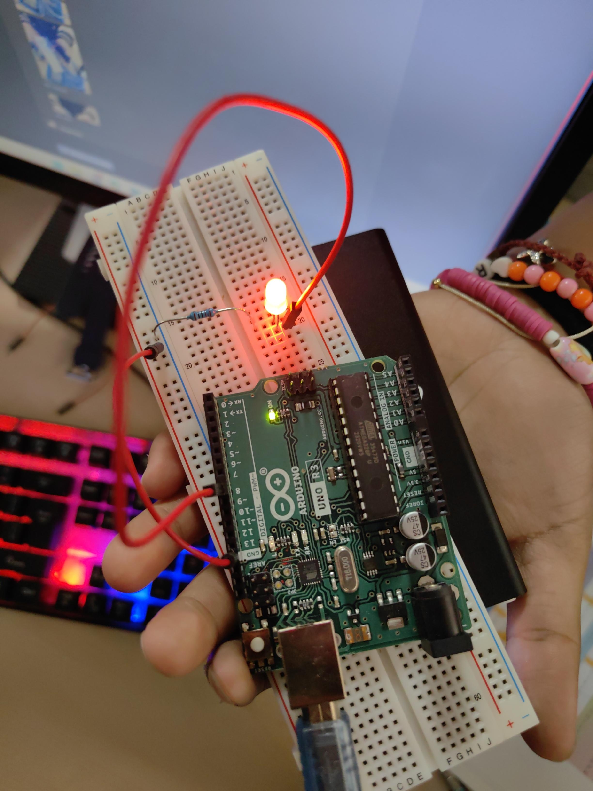

Contenido de la página WEB
Semana 1: Introducción a Arduino
En esta semana aprendimos de la plataforma Arduino, sus componentes principales y la diferencia entre señales analógicas y digitales.
Semana 2: Tinkercad
Aprendimos a hacer un circuito de luces LED y a programarlo con ayuda de un arduino en Tinkercad.

Semana 2: Tinkercad
Aprendimos a hacer un circuito de luces LED y a programarlo con ayuda de un arduino en Tinkercad.
Semana 2: Tinkercad
Aprendimos a hacer un circuito de luces LED y a programarlo con ayuda de un arduino en Tinkercad.

Semana 4: Circuito LED RGB
Encendimos un LED RGB
Semana 5: Medidor de Distancia
LEDS segun nota de suficiencia
Semana 6: Semáforo con Arduino
Realizamos un semaforo
Semana 7 Código y Programación
Programacion de LEDS para encender segun la distancia en la que se encuentra un objeto del sensor ultrasonico.
Semana 8 sensor de movimiento
Programacion de LEDS para encender si detecta movimiento.